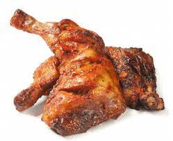

Chicken Tikka

Chicken Tikka
Tandoori Chicken Tikka ( Murgh Tikka) is a popular North Indian appetizer where boneless chicken pieces are marined with a spicy marinade and then grilled until nicely cooked and slightly charred. Tikka came from the Turkish word 'Tike,' which means 'Pieces.
Go Back